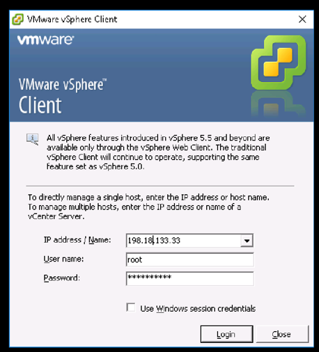
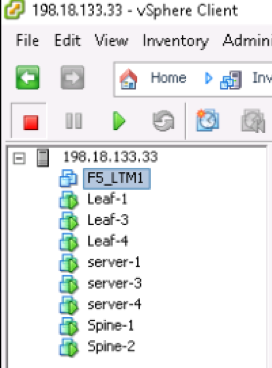
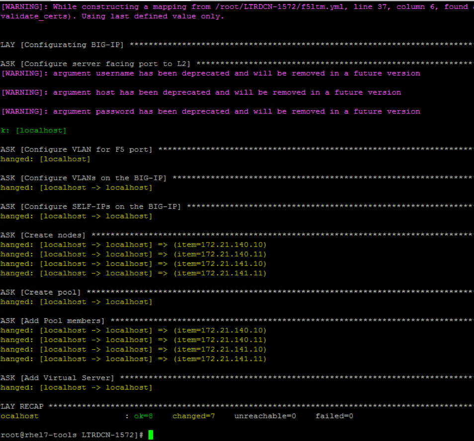

Appendix A: L4-L7 insertion
In this section, you will insert F5 BIG-IP load balancer into the fabric. - First send out a http request from server-4 to a VIP, and you will notice no http service enabled on VIP. - Run the playbook to enable http service on the VIP with server-1, server-2, server-3 and server-4 in the server pool. - After successful execute the playbook, you will notice http request to VIP is load balanced across three servers.
Step 1: Power on F5 Virtual Machine
-
open VMware vSphere Client to login ESXi (198.18.133.33) using crendentials of root/C1sco12345

-
Open up the VM under host 198.18.133.33, and power on VM named F5_LTM as shown below:

Step 2: Install Ansible pre-reqs
- Switch to MTPuTTY install prerequisites packages on Ansible node by using below
pip install ...commands (Note: the bold commands need to be executed):[root@rhel7-tools LTRDCN-1572]# pip install f5-sdk [root@rhel7-tools LTRDCN-1572]# pip install setuptools --upgrade [root@rhel7-tools LTRDCN-1572]# pip install bigsuds [root@rhel7-tools LTRDCN-1572]# pip install netaddr
Step 3: Check Virtual IP using curl
- Switch to ‘MTPuTTY’ and ssh into server-4. Then send http request to Virtual IP (VIP) 172.21.140.100 from server-4 using
curl http://172.21.140.100command - Below output shows the execution of above command i.e., HTTP request to VIP should fail:
[root@server-4 ~]# curl http://172.21.140.100 curl: (7) couldn't connect to host` [root@server-4 ~]#
Step 4:
- Switch to Atom, create new file name ‘f5ltm.yml’ under project folder LTRDCN-1572.
- Enter below data in this new file (named ‘f5ltm.yml’)
- Make sure to click
FileandSaveto ftp this data to Ansible server:
---
- name: Configurating BIG-IP
hosts: localhost
gather_facts: false
vars:
provider:
password: admin
server: 198.18.4.10
user: admin
validate_certs: False
tasks:
- name: Configure server facing port to L2
nxos_interface:
interface: eth1/4
mode: layer2
username: "{{ user }}"
password: "{{ pwd }}"
transport: nxapi
host: "198.18.4.104"
- name: Configure VLAN for F5 port
nxos_switchport:
interface: eth1/4
mode: access
access_vlan: 140
username: "{{ user }}"
password: "{{ pwd }}"
transport: nxapi
host: "198.18.4.104"
- name: Configure VLANs on the BIG-IP
bigip_vlan:
name: "External"
tag: "140"
untagged_interface: "1.1"
provider: "{{ provider }}"
- name: Configure SELF-IPs on the BIG-IP
bigip_selfip:
name: "172.21.140.50"
address: "172.21.140.50"
netmask: "255.255.255.0"
vlan: "External"
allow_service: "default"
provider: "{{ provider }}"
- name: Create static route
bigip_static_route:
provider: "{{ provider }}"
destination: 0.0.0.0
netmask: 0.0.0.0
gateway_address: 172.21.140.1
name: "defult"
- name: Create nodes
bigip_node:
provider: "{{ provider }}"
host: "{{item}}"
name: "{{item}}"
with_items:
- 172.21.140.10
- 172.21.140.11
- 172.21.141.10
- 172.21.141.11
- name: Create pool
bigip_pool:
provider: "{{ provider }}"
name: "web-pool"
lb_method: "round-robin"
monitors: "/Common/http"
monitor_type: "and_list"
- name: Add Pool members
bigip_pool_member:
provider: "{{ provider }}"
name: "{{item}}"
host: "{{item}}"
port: "80"
pool: "web-pool"
with_items:
- 172.21.140.10
- 172.21.140.11
- 172.21.141.10
- 172.21.141.11
- name: Add Virtual Server
bigip_virtual_server:
provider: "{{ provider }}"
name: "http-virtualserver"
destination: "172.21.140.100"
port: "80"
enabled_vlans: "ALL"
all_profiles:
- http
pool: "web-pool"
snat: "Automap"
Step 5: Run playbook
-
On the Ansible node (using MTputty SSH), run playbook f5ltm.yml to provision VIP (172.21.140.100) on F5 and to also put all four servers into the server pool using
ansible-playbook f5ltm.ymlcommand. -
Below shows the output of above command:

Step 6: Check load balancer
- Switch to ‘MTPuTTY’ and login to server-4,
- Run
curl http://172.21.140.100command multiple times,- Note that the request is load balanced to differert servers in the sever pool
- The execution and output of above command (when its run multiple times) is shown below:
[root@server-4 ~]# curl http://172.21.140.100
<html><body><h1>It works!</h1>
<p> Server-1 172.21.140.10 </p>
<p>This is the default web page for this server.</p>
<p>The web server software is running but no content has been added, yet.</p>
</body></html>
[root@server-4 ~]# curl http://172.21.140.100
<html><body><h1>It works!</h1>
<p> Server-3 172.21.140.11 </p>
<p>This is the default web page for this server.</p>
<p>The web server software is running but no content has been added, yet.</p>
</body></html>
[root@server-4 ~]# curl http://172.21.140.100
<html><body><h1>It works!</h1>
<p> Server-4 172.21.141.11 </p>
<p>This is the default web page for this server.</p>
<p>The web server software is running but no content has been added, yet.</p>
</body></html>
This concludes Appendix A using ansible to insert F5 (as load balancer) in the DC Fabric. Well done!